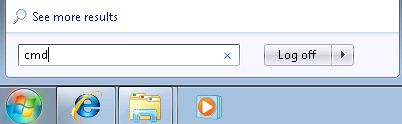
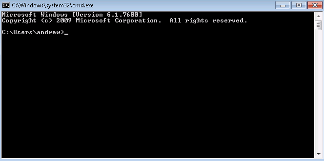
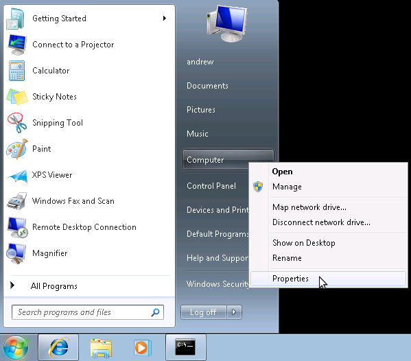
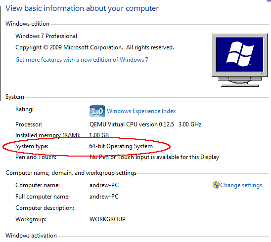
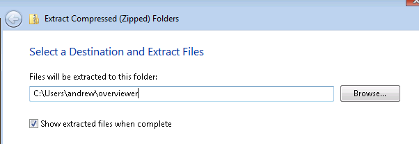
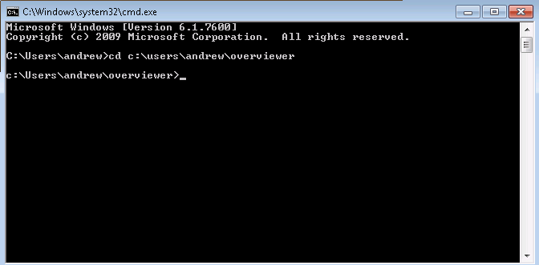
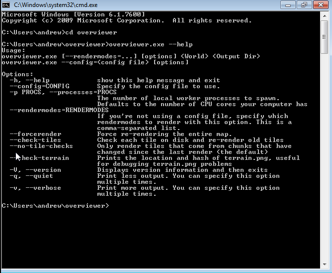
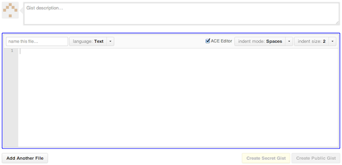
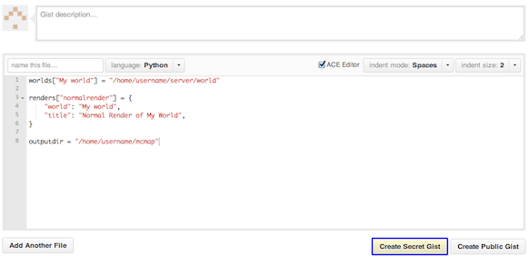
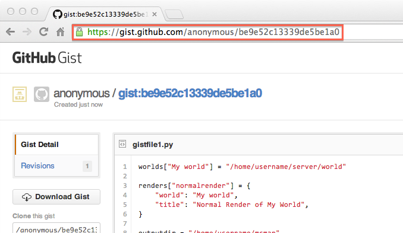

Windows Newbie Guide¶
If you’re running Windows and aren’t as familiar with the Windows command prompt as the rest of the documentation assumes you are, this page is for you!
The Overviewer is a command line tool, which means you will need to use the command line to run it.
- First step: Open the command line.
Open your Start menu and type in the box ‘cmd’ and press enter. If you’re running XP you’ll go to the “run” option instead and then type ‘cmd’ and press enter.
This should bring up the command prompt, a black window with a prompt where you can type commands. The prompt part will probably look something like
C:\Users\andrew>followed by a cursor where you type your commands.Leave this window open and move on to step 2.
Now that you know how to open a command line, and haven’t been scared off yet, the next step is to download the latest Overviewer.
- Step 2: Download Overviewer
Go to the Downloads Page and download the latest version for your architecture, either 32 bit or 64 bit.
This is important. If you don’t know which to choose, 32 or 64, then you can find out by clicking on the start menu, right clicking on the “Computer” icon or “My Computer” icon (depending on your version of Windows), and then selecting “Properties.” Somewhere among the information about your computer it should tell you if you’re running a 32 bit operating system or 64 bit operating system.
 Once you know if your computer is 32 or 64 bit, go and download the latest version. We make small changes all the time, and a new version is uploaded to that page for every change we make. It’s usually best to just get the latest.
Okay, you’ve got a command prompt open. You’ve got The Overviewer downloaded. We’re half way there!
- Step 3: Extract the Overviewer zip you downloaded.
This is easy. I assume you know how to unzip things. Unzip the contents to somewhere you can find easily. You’ll need to find it in the command prompt. It may help to leave the window with the unzipped contents open so you can remind yourself where it is.
Keep all those files together! They’re all needed to run The Overviewer.
- Step 4: Change directory in command prompt to the location of overviewer.exe
You remember the location of the files you just extracted? Windows doesn’t always make it easy. Here’s how in windows 7: just click on the little icon to the left of the directory name.
Got the location? Good. We’re going to change directory to that directory with the command prompt. Bring the command prompot window back up. The command we’re going to use is called
cd, it stands for … change directory!I’m going to illustrate this with an example. Let’s say you extracted Overviewer to the directory
c:\users\andrew\overviewer. Here is exactly what you’ll type into the command prompt and then press enter:cd c:\users\andrew\overviewer
Okay, did it work? Your command prompt should now have the current working directory in it. If your prompt changed to the directory that you just cd’d to, then your current directory changed successfully! You’re ready for the next step!
Okay before we actually run Overviewer for real, let’s do a checkpoint. You should have cd’d to the directory where overviewer.exe is. To test, type this in and you should see the help text print out:
overviewer.exe --help
note the two hyphens before “help”. You should see something like this:
The help text displays the usage of overviewer.exe, or the parameters it takes to run it. It’s kind of long, I had to make my window larger to show it all.
Usage:
overviewer.exe [--rendermodes=...] [options] <World> <Output Dir>
Command line tool usage convention says that items in [square brackets] are optional, while items in <angled brackets> are required.
- Step 5 Render a map!
Okay, so to render a map, you have to run
overviewer.exewith two parameters: the world path and a destination directory.Let’s say you have a world named “Singleplayer world” and you want to put the tiles into a directory on your desktop. Singleplayer worlds are stored on your hard drive at a location called
%appdata%\.minecraft\saves. Try typing this into the command prompt:overviewer.exe "%appdata%\.minecraft\saves\Singleplayer World" c:\users\andrew\desktop\mymap
Note
You must use quotation marks around a path that has spaces in it.
Note
%appdata%is a special windows “variable” that refers to the location on your drive where applications can store their data. Typing%appdata%instead of the full path is a convenient shortcut.If everything went according to plan, The Overviewer should now be churning away furiously on your world, rendering thousands of image files that compose a map of your world.
When it’s done, open up the file
index.htmlin a web browser and you should see your map!
I hope this has been enough to get some of you Windows noobs started on The Overviewer. Sorry there’s no easy-to-use graphical interface right now. We want to make one, we really do, but we haven’t had the time and the talent to do so yet.
The preferred way to run The Overviewer is with a configuration file. Without one, you can only do the most basic of renders. Once you’re ready, head to the The Configuration File page to see what else The Overviewer can do. And as always, feel free to drop by in IRC if you have any questions! We’re glad to help!
Common Pitfalls¶
Wrong working directory:
"overviewer.exe" is not recognised as an internal or external command, operable program, or batch file.This is a common mistake to make, especially for people unfamiliar with the command line. This happens if your current working directory does not contain overviewer.exe. This is likely because you’ve forgot to change the working directory to the directory you have unzipped overviewer into. Re-read Step 4 for instructions on how to do that.
Overviewer is on a different drive than C:
You may have Overviewer located on a different partition than C:, and for some odd reason the windows command line does not accept “cd D:” as a way to switch partitions. To do this, you have to just type the drive letter followed by a colon:
D:This should switch your current working directory to D:
Using GitHub Gist¶
Sometimes, when helping people with issues with Overviewer, we’ll often ask to see the config file you’re using, or, if there was an Overviewer error, a full copy of an error message. Unfortunately, IRC is not a good way to send large amounts of text. So we often ask users to create a Gist containing the text we want to see. Sites like these are also called Pastebins, and you are welcome to use your favorite pastebin site, if you’d like.
First, go to http://gist.github.com/
Second, paste your text into the primary text entry area:
Third, click the ‘Create Secret Gist’ button. A secret gist means that only someone with the exact URL can view your gist
Finally, send us the URL. This will let us easily view your properly formatted Gist.
